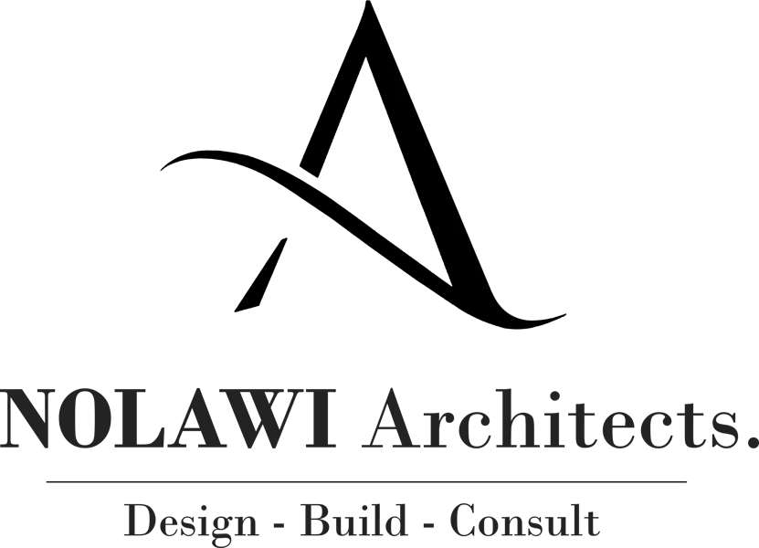

Selected work
Places with
purpose.
Architecture and interior projects shaped by how people meet, work, rest and belong.
Addis Ababa, Ethiopia
2017 to present

Selected work
Architecture and interior projects shaped by how people meet, work, rest and belong.
Addis Ababa, Ethiopia
2017 to present